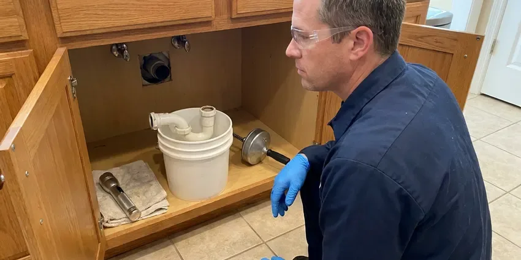

Clogged Sewer Line in Warner Robins, GA
Every drain slow at the same time is not a coincidence. Something is blocking the main line. We clear sewer clogs in Warner Robins, GA the same day.
- Upfront Pricing
- Clearing Warranty
- Full Line to the Street
- Camera Footage on Every Main

Roots in the Sewer Again in Warner Robins, GA?
Stop using water and call (770) 470-3778. A sewer tech can usually be there today.
When the Main Line Backs Up in Warner Robins, GA
HGR Plumbing has pulled roots, grease, wipes and pieces of collapsed clay pipe out of sewer lines. We have seen it all. After clearing, we show you the footage, explain what caused the clog and tell you plainly whether the pipe needs work or just regular cleaning.
Work we handle every week:
- Scheduled jetting for root-prone lines
- Root cutting with sectional sewer machines
- Two-way cleanout installation at the foundation

Additional Plumbing Maintenance Services in Warner Robins, GA
Our maintenance and specialty plumbing services in Warner Robins, GA catch small problems before they become emergencies.


Customers
Why Choose HGR Plumbing for Clogged Sewer Line in Warner Robins, GA?
We do not guess about what is in your pipe. We look first, always. Every main line clearing ends with a camera pass, so any repair we recommend is based on footage you watched yourself, not on a hunch from the cable.
- Honest Advice, If cleaning is enough, we tell you so, with no push to replace.
- Local Knowledge, We know which Warner Robins neighborhoods have clay laterals and big trees near the sewer.
- Full-Length Clearing, We run the cable or jetter all the way to the city tap or septic tank.
Citywide Coverage
Our crews cover Warner Robins, GA and the towns around it. Same trucks, same gear. From the center of town to the outer edges, a sewer tech can usually reach you the same day with a machine, a jetter and a camera on board.
Experienced Team
Every tech is trained on sectional machines, jetters and inspection cameras. Old pipe gets care. They know how to work around old clay and Orangeburg fiber pipe, so a cleaning does not turn into an excavation.
Safety-First Approach
Your home gets protected while we work. Floors are covered first. Any fixture we pull gets reset with a new wax ring, and cables are wiped as they come out so nothing drips across the floor on the way back to the truck.
Trusted Certified Warner Robins Plumbing Services Professionals
At HGR Plumbing, we are proud to offer certified plumbing services throughout Warner Robins, GA. Those papers on the wall mean something. Our plumbers hold recognized industry credentials, and they follow strict safety and quality rules on every repair, installation and maintenance call we run.
Call Us Now PHCC Plumbing Contractor Recognition
PHCC Plumbing Contractor Recognition Better Business Bureau (BBB) Accreditation
Better Business Bureau (BBB) Accreditation Angi Certified Pro
Angi Certified Pro ISO 9001 Quality Management Certification
ISO 9001 Quality Management CertificationMain Sewer Clearing and Repair in Warner Robins, GA
Commercial Clogged Sewer Line Service in Warner Robins
Commercial sewer lines in Warner Robins carry far more than a house does. Kitchen grease is the big one. HGR Plumbing clears restaurant mains, apartment building laterals and shared office drains with commercial-grade sectional machines and a high-flow jetter, and we can set up a jetting schedule to keep the line open between grease trap pumpings.

Hydro-Jetting Services in Warner Robins, GA
Jetting sends water at thousands of psi through a nozzle that sprays backward and drives itself down the pipe. The pipe gets cleaned all the way around. A cable punches a hole through a grease plug, while a jetter removes the grease, scale and fine roots coating the pipe so the next clog has nothing to start on. We camera the pipe first. Badly cracked pipe gets a gentler approach.
Main Line Hydro Jetting in Warner Robins
A jetter cleans the full diameter of the pipe, not just a hole through the middle. That is the difference. Water at thousands of psi cuts roots, grease and scale while the nozzle drives itself forward. We camera the pipe first so jetting only goes into lines that can take it. Many lines stay clear for years after.
Emergency Sewer Line Clog Clearing in Warner Robins, GA
A fully blocked sewer will push raw sewage out the lowest drain in the building. Usually a floor drain or tub. HGR Plumbing sends an emergency tech across Warner Robins, GA with the full kit, opens the line and keeps the mess contained. The spill area gets cleaned.
Tree Root Sewer Clogs in Warner Robins
Clay and older cast iron sewer pipe have a joint every few feet. Each joint is an opening. Roots from trees and shrubs push into the gaps and fill the pipe, then we cut them out and camera the line for damage. Ongoing root problems may call for a treatment schedule or lining.
Cleaning vs. Repairing a Sewer Line in Warner Robins, GA
A sound pipe with a grease or root clog just needs cleaning. Cracked pipe is different. Offset joints, cracks and collapsed sections keep clogging no matter how often they get cleared, so the camera footage decides whether you spend a few hundred dollars on cleaning or more on a spot fix, liner or replacement. We walk you through it.
Tree Root Invasion Removal in Warner Robins
Roots find sewer lines by following moisture in the soil. A hairline gap is enough. Once inside, they spread into a net that traps everything moving through. We cut them out with a root saw on a sectional machine, then camera the line to see how many joints are letting roots in. Lining or replacement seals the joints for good.

Grease and Sludge Buildup Removal in Warner Robins, GA
Kitchen grease cools in the sewer line and sticks to the walls. Layer after layer builds up. Soap scum and food bind to it until the opening shrinks to a fraction of the pipe, after which ordinary use causes backups. HGR Plumbing jets it out with a grease nozzle in Warner Robins, GA. The camera confirms it is gone.
Local Sewer Clog Service in Warner Robins, GA
Searching "clogged sewer line near me" in Warner Robins, GA usually means water is coming up somewhere it should not. Shut off anything draining. HGR Plumbing keeps sewer trucks out in the area, which gets a fully equipped tech to you fast.
Being close matters on a sewer backup. Every minute adds to the mess. Our trucks run across Warner Robins, GA with full equipment, which means one visit usually handles all of it.
HGR Plumbing at a Glance
- Fully licensed plumbing team covering Warner Robins, GA
- 24/7 emergency service with same-day scheduling
- Clear written estimates, no hidden fees
- 4.9-star rated by 357+ Georgia customers
Warner Robins Map
Warner Robins Information
- Population
- 84,537
- Area codes
- 478/229/404
- Service area
- Warner Robins and towns within a 40 mile drive
- Nearby
- Macon, Columbus, Albany, Stonecrest
Older sewer laterals in Warner Robins, GA were laid in short sections with a joint every few feet, which gives roots dozens of places to push through.
Talk to a Plumber
Reach out to HGR Plumbing for reliable plumbing work done by licensed pros in Warner Robins, GA.
Our Specialized Plumbing Services in Warner Robins, GA
At HGR Plumbing, we handle the full list of plumbing services across Warner Robins, GA. From leak detection to full system installs, our team works fast and charges fair prices on homes and commercial properties alike. Take a look at our core services below:


What Happens on a Sewer Call in Warner Robins, GA
From the first call to a camera-checked line, this is the order we work in.
Book a Visit
Call (770) 470-3778 and we will give you a time. Same-day service is common.
Inspect On Site
The plumber opens the cleanout, checks the line and decides how to clear it.
Clear and Confirm
We cut, cable or jet the line to the city tap. Then the camera confirms it is open.
Frequently Asked Questions About Clogged Sewer Line in Warner Robins
Most sewer clearings in Warner Robins, GA cost $250 to $700. Heavy roots cost more. Jetting, a camera inspection or a line with broken pipe lands at the higher end because it takes more time and equipment to clear and confirm. You get the price before we start.
Probably not. It can go badly. A drum auger from the rental shop can jam, crack old pipe or get stuck. Calling a professional is safer and usually faster.
Routine clearing does not need one. Most repairs need one. Cleanout installation, spot repairs and full replacement typically need a permit, and we handle it. You will know before we start.
Most main line clearings take one to two hours. Roots can slow it down. Severe root intrusion, lines with no cleanout or very long runs to the street add time, and the camera adds 30 to 60 minutes. We give you an estimate first.
Yes, most clearings carry a guarantee. Usually 30 to 90 days. The length depends on the cause of the clog and the condition of the pipe, since a line with broken sections may clog again even after a perfect clearing. We go over the terms before we start.
Flush only toilet paper. Nothing else goes in the toilet. Keep grease out of the kitchen sink, and schedule regular cleaning if roots are a problem. Enzyme products can help too.
Several drains slowing down at once. That is the classic sign. Gurgling toilets, sewage smells in the house and water coming up in the shower after a flush point to the main. In Warner Robins, roots are often behind it.
Roots growing into old joints cause the most clogs. Grease is next. Wipes, paper towels and hygiene products add to the problem, and old pipe that sags or cracks catches waste. The southern coastal plain has sandier soil and a higher water table, so drainage and root intrusion are bigger concerns there than shifting.
Hear From Customers Who Hired Our Plumbing Experts

Greg S.
I manage a small strip center with six tenants. HGR Plumbing handles our annual backflow testing and fixed a recurring clog in the shared sewer line that had been backing into the nail salon. Their reports come in clean and on time.
Commercial Plumbing · Warner Robins, GAMark T.
The floor drain in our office break room backed up every few weeks. The plumber ran a cable, then put a camera down and found roots at a joint about thirty feet out. Seeing it on the screen made the decision easy.
Drain Cleaning · Macon, GA
Megan L.
Our upstairs tub drained so slowly that every shower turned into a bath. HGR Plumbing pulled a wad of hair out of the stopper and then snaked the line past the trap. Three months later it still drains fast.
Drain Cleaning · Columbus, GARachel N.
Hard water was leaving white crust on every faucet and our dishwasher was struggling. The tech tested the water, recommended a softener sized for a family of five, and installed it with a bypass valve in one afternoon. The spots on our glasses are gone.
Water Softener · Albany, GA
Diane F.
My kitchen faucet had dripped for months and I finally got tired of hearing it at night. HGR Plumbing came out the next morning, replaced the cartridge and the O rings, and tightened a loose base that was letting water under the sink.
Faucet Repair · Stonecrest, GA
Laura S.
Our 40 gallon tank started leaking from the bottom after thirteen years. The tech hauled the old one out, set a new unit with a fresh expansion tank, and had hot water running in about four hours. He took the old tank with him too.
Water Heater Replacement · Macon, GA